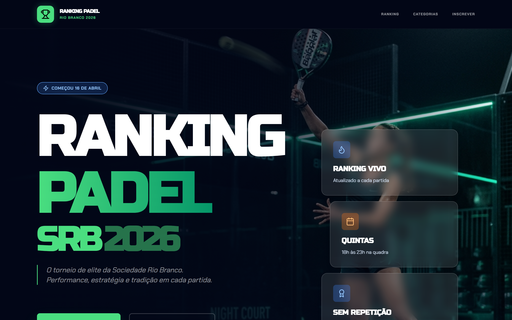
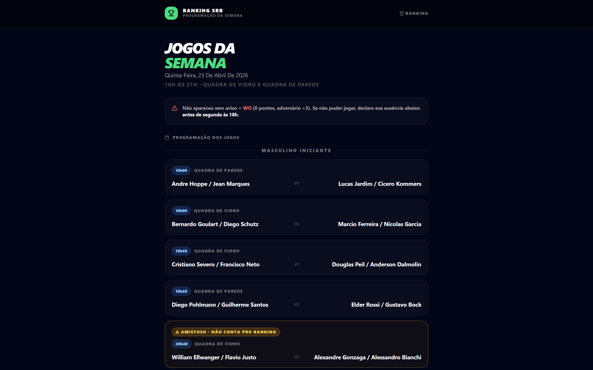
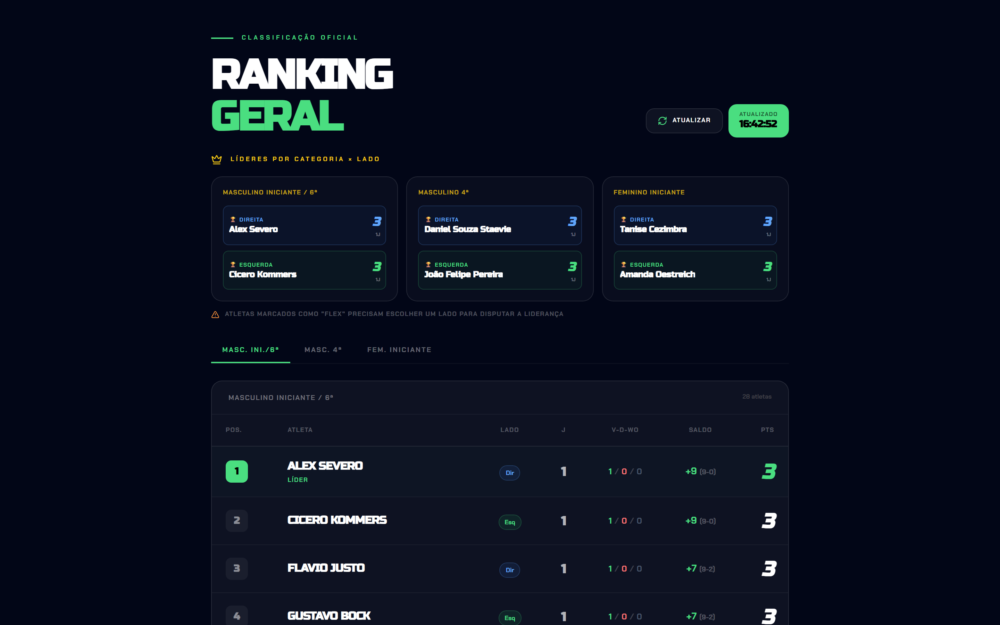
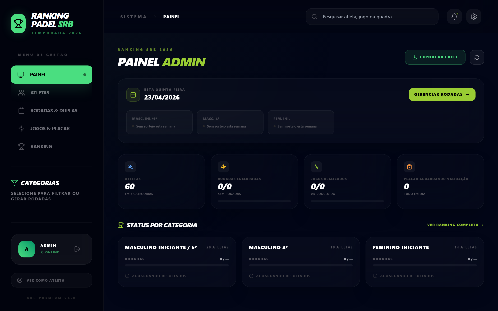
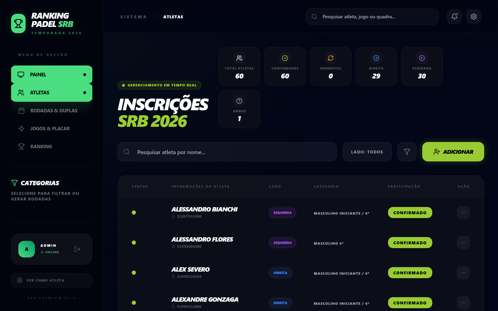
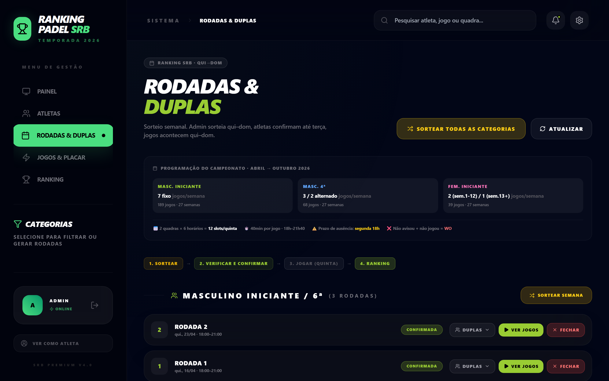
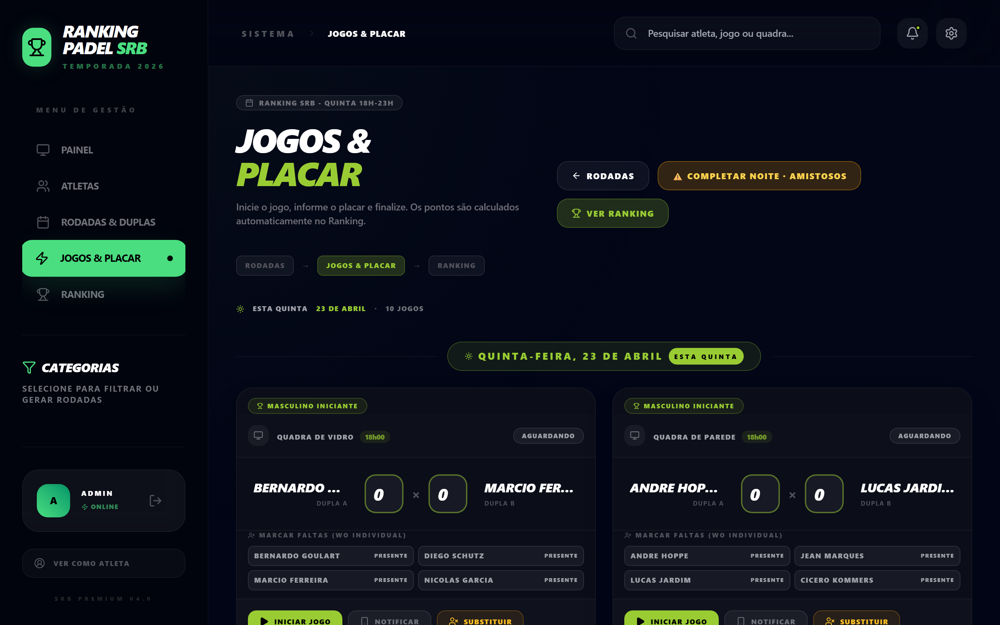

Sistema de ranking ao vivo pra arena de beach tênis. Tu conhece as arenas. Eu construí o produto. Bora levar junto.
Em produção há semanas no clube de pádel da Sociedade Rio Branco em Cachoeira do Sul. Pronto pra adaptar pra arena de BT que tu indicar — com regras desenhadas com a tua leitura técnica de prof.
Sou Alessandro Flores, fundador da Obralivre.COM. Te encontro na SRB (sou sócio jogador no pádel) — daí a conversa que a gente teve sobre o ranking que construí pro clube.
Em 2026, a diretoria do pádel da SRB pediu um ranking vivo, rodando temporada inteira, com regras próprias. Topei. Construí, ajustamos juntos até a conta bater. Roda em produção desde abril.
A mesma estrutura — temporada contínua, regras próprias, admin sem TI — faz total sentido pra arena comercial de beach tênis. Diferença: enquanto pra clube é coordenação operacional, pra arena é ferramenta de retenção. Atleta que joga na arena entra na liga, compete o ano todo, volta toda semana.
Como tu é prof de BT e circula nas arenas, tu tem 2 coisas que eu não tenho: relação com os donos e leitura técnica de como o BT compete (regras de pontuação, formato, dinâmica de duplas). Por isso te chamei pra ler isso aqui antes de qualquer outra arena — se a parceria fizer sentido, a gente avança junto.

Versão mobile dedicada — cada atleta acompanha o próprio ranking se atualizando, agenda da semana, histórico de partidas. Sem app pra instalar — abre direto no navegador. Liga contínua: cada partida muda o ranking na hora.
Pontuação, critérios de desempate, formato de rotação. A arena define as regras da liga — o motor aplica sem reescrita de software.
Sorteio semanal, confirmação de atletas, lançamento de placar, exportação pra planilha. Tudo pela interface. A arena (ou um colaborador) opera sem chamar time técnico.
Durante as rodadas, uma TV na arena transmite os jogos em andamento, placar atualizando em tempo real, próximas partidas e ranking da temporada. Experiência de evento — atleta sente que está num torneio sério toda semana, não numa pelada esquecida.
Como cada tela aparece pro atleta e pra operação da arena. Screenshots da produção real (clube SRB, rodando pádel), em obralivre.com.br/ranking-srb. A interface é a mesma — o que muda é a camada de regras de pontuação, o nome dos campos e a marca aplicada.
Cada atleta vê a agenda da semana, confirma presença ou declara ausência. Ausências entram no motor como WO.

Ranking atualiza no momento do lançamento do placar. Filtros por categoria, ordenação por pontos, vitórias, saldo de games.

Próxima rodada, atletas ativos, rodadas encerradas, jogos em andamento, ranking por categoria. Exportação pra Excel em dois cliques.

Adicionar atleta, mover de categoria, resetar senha via WhatsApp, declarar ausência. Tudo pela interface.

Motor sorteia duplas balanceadas respeitando lado e histórico anterior. Confirma presença, gera agenda, reserva quadras.

Lançar resultado de partida, marcar WO, editar placar. Cálculo de pontos, saldo e desempate é automático e segue as regras definidas pra liga da arena.

A espinha estrutural (temporada, rodadas, partidas, ranking, admin) é reutilizada entre modalidades. O que muda é a camada de regras — pontuação, desempate, formato — e isso, no caso do beach tênis, calibramos contigo na primeira call.
Chaveamento, brackets, inscrições online, pagamento, geração automática de tabelas, comunicação com atletas. Mesmo padrão de design. Mesmo suporte. É só avisar no primeiro contato.
Software e marketing pra negócios que valorizam cuidado na entrega.
Estratégia de negócios, funil de vendas, gestão de marketing e tráfego pago — e agora também gestão de agentes de IA e automação inteligente de processos.
Clientes ativos em pintura industrial, advocacia e outras verticais. Entrega direta — sem intermediários, sem camadas de gestão.
O Ranking Padel SRB 2026 é o primeiro produto do portfólio de esportes de raquete da Obralivre — em uso operacional no clube desde abril de 2026. Beach tênis é o próximo capítulo, e tu é a parceira que pode abrir essa porta.
Termos firmes, escritos, pra tu já saber o quanto vale o teu trabalho de abertura. Nada de "alinha depois" — está aqui pra discutir na primeira call.
do valor do contrato fechado com a arena que tu indicar. Pago no fechamento, sem compromisso recorrente — recebe e segue limpo.
% específico definido caso a caso conforme porte da arenaComo prof de BT, tu lê comigo a camada de regras (pontuação, formato, duplas, categorias). O que rodar bem na primeira arena vira o padrão BT do produto.
Voz ativa nas decisões técnicas de BTQuando lançarmos a versão BT pro mercado, tu aparece como embaixadora técnica do produto — comunicação conjunta, autoridade no nicho, próximas indicações chegam mais quentes.
Posicionamento profissional além do imediatoComo funciona na prática: tu apresenta o produto pro dono da arena (ou marca a call comigo). Se fechar, comissão paga em até 7 dias úteis após o pagamento da arena. Sem mínimo, sem cota, sem exclusividade — tu indica quantas arenas quiser, cada uma vira um caso isolado.
15 minutos de call. Eu te mostro o produto rodando ao vivo no SRB. Tu me conta quais arenas tu atende, qual seria a melhor pra começar e como tu enxerga a abordagem. Saímos da call com 1 ou 2 nomes de arena-alvo, abordagem alinhada, e proposta sob medida pra cada uma.